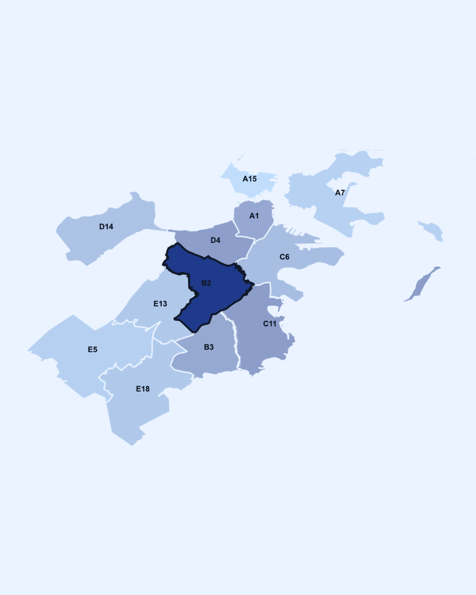

Writing • Data Ethics • Interactive Storytelling
Boston
Algorithmic Bias
An interactive writing project exploring how algorithmic systems can interpret neighborhood data and reinforce bias in urban decision-making.

Overview
Making algorithmic bias easier to see and question.
This project uses Boston neighborhood and crime data as a lens to explain how algorithmic systems can reflect existing social patterns. The site combines writing, visuals, and interactive elements to help users think critically about data-driven decisions.
Goal
“Use storytelling and interaction to make data bias more understandable.”
Reflection
What this project taught me.
This project helped me think more critically about how data, design, and social impact connect. I learned how interactive storytelling can make complex issues like algorithmic bias more accessible, while still encouraging users to question how data is collected, interpreted, and used.